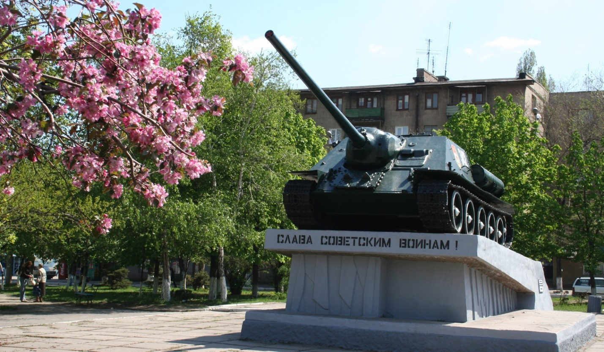

Готовясь к празднованию 30-летия Победы в Великой Отечественной войне, городская администрация сделала запрос в Киев, чтобы в наш город прислали машину, участвовавшую в боевых действиях. Вскоре на железнодорожной платформе из Конотопа прислали самоходную установку, которой было суждено стать памятником в Алчевске. На подготовленный постамент по специальным лежням САУ-100 заезжала своим ходом. Затем специалисты зажали тормозные рычаги, обварили бортовые фракционы, прихватили сваркой гусеницы с обеих сторон. Когда памятник был готов, военные покрасили ходовую часть машины, заварили крышку люка. В таком виде Памятный знак в честь советских воинов – артиллеристов, самоходников встретил 30-летие Победы .Проект постамента разработан преподавателями кафедры архитектуры Донбасского горно – металлургического института А. С. Москалевым и В. Г. Поневежей. В сооружении Памятного знака принимали участие трудящиеся города, учащиеся профтехучилищ и школ. Право его открыть было предоставлено участнику гражданской и Великой Отечественной войн, Почетному гражданину Алчевска В. Н. Берещанскому, Герою Советского Союза И. И. Меркушеву и полному кавалеру ордена Славы В. Н. Кривоногову.

Площадь имени 30-летия победы
